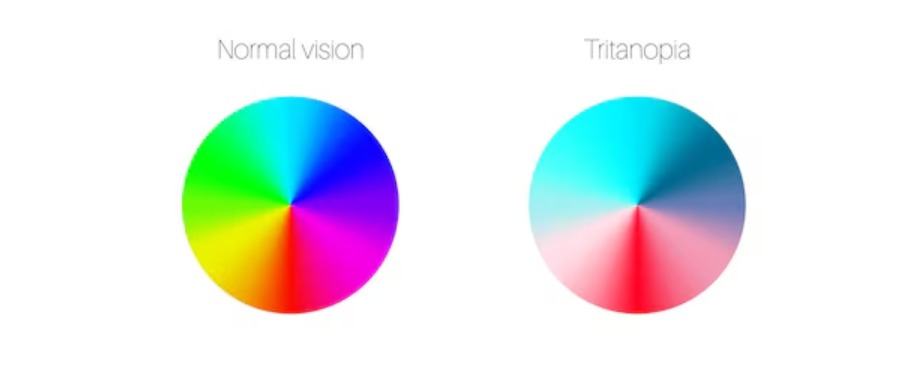

About Tritanopia
Tritanopia is a rare form of color blindness where the blue-sensitive cone cells (S-cones) in the retina are absent or non-functional. This leads to difficulty in distinguishing between blue and green, and between yellow and red hues.
People with tritanopia may perceive blue as green and yellow as pink or light grey.
Unlike protanopia and deuteranopia, which are inherited through the X chromosome and are more common in males, tritanopia is not sex-linked and can affect both males and females equally.
It is also the rarest of the three major types of color blindness. Tritanopia is typically caused by genetic mutations, but it can also develop later in life due to eye diseases, aging, or exposure to certain chemicals or medications.
While it doesn't affect overall visual clarity, it can make tasks like color matching, reading color-coded data, or selecting clothing more difficult. Adaptive strategies and assistive technologies can help individuals manage tritanopia effectively.
